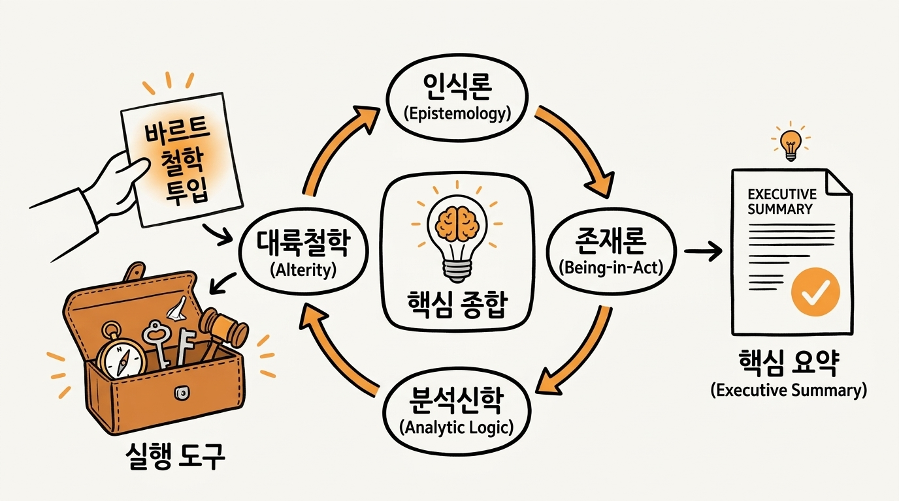

현대 철학 지형 속의 칼 바르트 연구 동향 리포트
인식론, 행위주의 존재론, 그리고 탈근대 대륙철학의 교차 지점에 관한 실증 서지 분석
칼 바르트(Karl Barth, 1886–1968)는 더 이상 신학의 영역에만 머무르는 인물이 아니다. 현대 철학계는 바르트의 저작에서 비판적 실재론(Critical Realism), 주체로의 전회에 대한 비판(Critique of the Turn to the Subject), 행위주의적 존재론(Actualist Ontology), 그리고 언어와 반복(Repetition)에 관한 독창적인 철학적 통찰을 발굴하여, 현대 존재론과 인식론의 최전선에서 능동적인 대화 상대로 다루고 있다.

1. 철학계의 바르트 연구 5대 거시 경향성 개관
현대 철학계에서 전개되는 바르트 연구의 전체 지형도는 크게 다음과 같은 다섯 가지 핵심 전회(Five Major Turns)로 수렴된다.
- 근대 주체주의 해체와 탈주체적 전회: 데카르트-칸트-슐라이어마허로 이어진 인간 자아 중심의 인식론을 비판하고, 삼위일체 하나님을 유일한 궁극적 주체로 정립하는 주체의 교환(Exchange of Subjects)과 실재 중심의 비판적 실재론을 확립했다.
- 고전 형이상학 극복과 행위주의 존재론 논쟁: 신의 존재가 정적 실체인가 아니면 은혜로운 선택 행위 자체인가를 둘러싼 맥코맥 학파(행위주의)와 훈징거 학파(본질주의), 그리고 최근의 구체화 독법(Specification reading)으로 이어지는 치열한 형이상학적 쟁점이다.
- 분석종교철학 및 분석신학과의 융합: 아리스토텔레스적 스콜라주의가 왜곡한 신적 단순성(Divine Simplicity)을 인격적 일관성으로 정화하고, 과정철학의 수동성을 극복하는 능동적 수난론(Divine Passibilism)을 제시했다.
- 대륙철학과의 교감과 반복의 기호학: 초기 바르트의 무한한 질적 차이와 전적 타자(Ganz Andere)가 레비나스·데리다의 타자 윤리학으로 이어졌으며, 키에르케고르적 반복(Repetition) 개념을 통해 언어의 취약성과 말씀의 사건성을 해명했다.
- 반이데올로기적 철학관과 원칙적 실용주의: 특정 철학 체계에 예속되지 않고 실용적이면서도 원칙적으로 철학 개념을 차용하며, 어떤 인간적 체계도 궁극적 헤게모니로 군림하지 못하게 통제하는 사유의 윤리를 확립했다.
| 연구 분과 | 핵심 쟁점 및 분석 화두 | 철학적 의의 및 함의 |
|---|---|---|
| 인식론 | 주체로의 전회 비판, 비판적 계시 실재론 | 데카르트적 자아의 독점을 깨고 대상 중심의 인식론 확립 |
| 존재론 | 행위주의(Actualism) 대 전통 본질주의 | 정적 실체론을 넘어 '사랑의 결정 행위로 존재하는 인격적 존재론' 정초 |
| 분석종교철학 | 신적 단순성 정화, 능동적 신적 수난론 | 고전 유신론의 정적 한계와 과정철학의 수동적 종속성을 동시 극복 |
| 대륙철학 | 전적 타자(Ganz Andere), 반복(Repetition) | 레비나스·데리다적 타자 윤리학 및 사건 중심의 언어 기호학 선구 |
| 철학방법론 | 반이데올로기적 실용주의 | 모든 철학 체계의 절대화와 이데올로기적 독점을 경계하는 비판적 사유 |
2. 신학적 인식론과 비판적 실재론
철학계에서 바르트의 학술적 영향력 중 가장 확고한 분야는 인식론이다. PhilPapers 색인 체계에서 바르트의 대표작 『교의학』(Church Dogmatics)은 종교인식론(Epistemology of Religion)의 핵심 고전으로 등록되어 120회 이상의 직접 피인용을 기록하고 있다.
2.1. 칸트의 선험적 관념론과 바르트의 정합성
로버트 핸드(Robert A. Hand, 2022)는 『하나님을 전제하기』(Presupposing God) 연구에서 바르트가 칸트의 비판철학을 단순 거부한 것이 아니라, 칸트가 확립한 인간 이성의 선험적 한계를 철저히 승인하고 이를 신학적으로 완성했다고 논증한다. 인간 이성은 스스로 초월적 실재를 포섭할 수 없으며, 인식의 주체가 대상을 임의로 구성하는 것이 아니라 계시라는 대상이 인간의 인식 방식을 전적으로 규정한다는 비판적 실재론의 기초를 확립했다. 케빈 딜러(Kevin Diller, 2010) 역시 바르트가 철학 자체를 부정한 것이 아니라 인식 주체의 자율적 지배권을 해체하고 계시의 실재론적 성격을 옹호했음을 밝힌다.
2.2. 근대 주체주의와 '주체로의 전회'에 대한 해체
디르크 마르틴 그루베(Dirk-Martin Grube, 2008)는 논문 「하나님인가 주체인가? 칼 바르트의 '주체로의 전회' 비판」을 통해, 데카르트에서 칸트, 슐라이어마허로 이어진 근대 인식론의 기본 전제인 주체로의 전회(Turn to the Subject)를 바르트가 정면으로 해체했음을 밝힌다.
근대 철학이 인간 주체의 자율성과 내면적 종교 경험을 모든 진리의 최종 척도로 삼았던 반면, 바르트는 이를 인간의 자기투사로 규정했다. 바르트는 인간 주체 대신 삼위일체 하나님을 궁극적이고 유일한 인식의 주체로 복권하는 주체의 교환(Exchange of Subjects)을 단행했다. 이는 탈근대 철학이 데카르트적 자아를 공격하기 이전에 바르트가 선구적으로 이룩한 탈주체적 전회로 평가된다.
2.3. 과학철학과의 대화: 변증법적 비판적 실재론
로스 맥켄지와 브라이언 마이어스(Ross H. McKenzie & B. Myers, 2008)는 학술지 『과학과 기독교 신앙』(Science and Christian Belief)에서 양자물리학과 칼 바르트의 인식론을 비교 연구했다.
- 대상이 방법을 결정한다: 탐구 대상이 고유한 연구 방법을 규정한다는 원칙이다. 신학에서 하나님의 초월성이 탐구 방식을 규정하듯, 양자역학에서도 미시 양자 세계의 실재가 고전물리학의 관측 틀을 무너뜨리고 새로운 측정 방식을 강제한다.
- 선험적 사변의 배제: 실재를 미리 규정하지 않고 대상의 자기 계시에 인식을 일치시키는 사후적(a posteriori) 실재 추종은 현대 과학철학의 비판적 실재론과 긴밀하게 소통한다.
3. 현대 존재론(Ontology) 대논쟁: 행위주의 대 본질주의
현대 영미권 철학 및 신학 연구에서 가장 격렬한 논쟁은 바르트 존재론 논쟁(The Barth Ontology Debate)이다. 이 논쟁은 고전 형이상학의 근본 물음인 "하나님의 존재(Being)가 행위(Act)에 선행하는가, 아니면 선택의 행위 안에서 비로소 구성되는가?"를 다룬다.
에드먼드 퐁은 2025년 『국제조직신학저널』(IJST) 논문에서 바르트의 신적 자기결정(Divine Self-Determination)을 둘러싼 해석을 세 갈래로 정리했다. 첫째는 행위가 선재적 존재를 단순히 드러낸다는 반복 독법(Repetition reading), 둘째는 행위 안에서 존재가 산출된다는 구성 독법(Constitutive reading), 셋째는 신적 실존이 신적 본질에 완벽히 부합하여 구체화된다는 구체화 독법(Specification reading)이다. 퐁은 구체화 독법을 통해 하나님이 자기원인(causa sui)이 아니면서도 참된 자발적 운동자(self-moved being)라는 바르트의 고유한 사유를 양극단의 왜곡 없이 조화시킬 수 있다고 제안한다.
4. 분석종교철학(Analytic Philosophy)과의 대화
스탠포드 철학 백과(SEP)의 서지 항목과 현대 분석신학(Analytic Theology) 진영에서는 바르트의 개념을 활용하여 고전 유신론의 철학적 아포리아를 비판적으로 재검토하고 있다. 제임스 킨케이드(James Kincade, 1960) 이래 현대 분석철학은 바르트 신학의 논리적 엄밀성을 추적해 왔다.
4.1. 신적 단순성(Divine Simplicity)의 정화
키스 존슨(Keith L. Johnson, 2019)은 바르트가 토마스 아퀴나스 이래의 스콜라주의적 신적 단순성(Divine Simplicity) 교리를 기독론적으로 정화했다고 분석한다. 아리스토텔레스적 '부동의 원동자' 개념이 상정한 차갑고 정적인 단일성을 거부하고, 단순성을 '삼위일체 하나님께서 역사 속에서 자기를 계시하시는 행위의 완벽한 진실성과 내적 일관성'으로 재정의했다.
4.2. 과정철학의 신적 수난론과의 대결
사르키스 사나얀츠(Sarkis V. Sanayants, 2025)는 찰스 하트숀(Charles Hartshorne)의 과정철학적 신고전주의 유신론과 바르트의 신적 수난론(Divine Passibilism)을 비교했다. 하트숀의 과정철학에서 하나님은 세계의 경험에 의존하여 비로소 채워지는 수동적 수용성(passive receptivity)에 갇히는 반면, 바르트의 하나님은 피조물의 결핍 때문이 아니라 무한한 주권적 자유 속에서 피조물과 함께 고난받기를 기꺼이 선택하시는 능동적 주권을 견지한다.
4.3. 반이데올로기적 철학관
킴린 벤더(Kimlyn J. Bender, 2025)는 『바르트의 반이데올로기적 신학』을 통해 바르트가 특정 철학 학파에 결코 종속되지 않았음을 실증했다. 케네스 오크스(Kenneth Oakes, 2012)의 옥스퍼드 모노그래프와 궤를 같이하며, 바르트의 철학 차용은 실용적이면서도 원칙적이었고 어떤 인간적 사유 체계도 절대적 진리로 군림할 수 없다는 확고한 반이데올로기적 사유(Anti-ideological thinking)를 평생에 걸쳐 견지했다.
5. 대륙철학과 해체주의: 타자성, 역설, 그리고 반복
프랑스 현대 대륙철학 및 해체주의 연구자들에게 초기 바르트의 『로마서』(Der Römerbrief)와 후기 언어관은 에마뉘엘 레비나스(Emmanuel Levinas), 자크 데리다(Jacques Derrida), 쇠렌 키에르케고르(Søren Kierkegaard)와의 결정적 접점으로 평가받는다. 마크 매킨로이(Mark J. McInroy, 2011)는 바르트가 인격주의 철학(Personalist Philosophy)을 신학적 틀 안에서 비판적으로 수용한 과정을 밝힌다.
5.1. 무한한 질적 차이와 절대적 타자
초기 바르트가 선언한 하나님과 인간 사이의 무한한 질적 차이(Infinite Qualitative Distinction)와 전적 타자(Ganz Andere) 개념은 레비나스의 타자 윤리학 및 데리다의 부정신학 연구에서 서구 형이상학의 전체성(Totality)을 파괴하는 선구적 사유로 평가된다. 인간의 언어, 문화, 지적 체계가 신의 심판대 앞에서 철저히 상대화되는 위기(Krisis)의 계기를 제공하기 때문이다.
5.2. 말씀의 사건성과 '반복'(Repetition)의 기호학
티모시 스탠리(Timothy Stanley, 2023)는 학술지 『현대 신학』(Modern Theology)에서 바르트의 성서론(『교의학』 I/2)이 키에르케고르와 현대 기호학의 반복(Repetition) 개념을 핵심 작동 기제로 삼고 있음을 입증했다.
성서는 고정된 정적 문헌에 머물지 않고, 성령의 사건 속에서 하나님의 말씀으로 울려 퍼지는 역동적 반복의 장이다. 바르트는 인간 언어와 문자가 지닌 취약성을 정직하게 긍정하면서도, 그 연약한 기호 안에서 초월적 실재가 매 순간 사건으로 도래하는 이중적 긴장을 탁월하게 구조화했다.
6. 리포트 작성에 활용된 연구 도구 체계
본 학술 리포트는 워크스페이스 내에 구축된 에이전트 학술 탐색 스킬과 데스크톱 브라우징 엔진을 통해 실시간 수집된 1차 학술 서지 데이터를 바탕으로 작성되었다.
| 도구 및 스킬 | 실행 스크립트 / 환경 | 주요 역할 및 수집 데이터 |
|---|---|---|
| phil-searcher (v1.0.0) | phil_ego_runner.mjs / phil_ego.py via bin/ego-run |
PhilPapers 및 PhilArchive 실증 탐색: Cloudflare WAF 통과, 5단계 철학 분류 카테고리(Epistemology of Religion 등), 인용수, 원문 링크 수확 |
| SEP 권위 색인기 | phil_ego_runner.mjs --sep |
스탠포드 철학 백과(Stanford Encyclopedia of Philosophy)의 전문 항목 서지 맥락 탐색 |
| semantic-scholar (v2.2.0) | s2_ego.py (--enrich 모드) |
Semantic Scholar Graph API 기반 2024–2025년 최신 논문(IJST, Modern Theology 등) 탐색 및 ego browser 연동 초록/BibTeX 보강 |
| gs-semantic-search | run_scholar_ego.py / scholar_ego_runner.mjs |
Google Scholar Semantic Recon: Chicago 인용 추출, 옥스퍼드 모노그래프(Kenneth Oakes) 및 피인용 클러스터 연계 탐색 |
| ego lite 러너 | bin/ego-run, bin/ego-clean |
사용자 네이티브 브라우저 컨텍스트 내 안전 태스크 스페이스 생성 및 고아 세션 자동 정리 |
| 포맷 및 린트 검증기 | bin/lint-md.py, bin/lint-html.py |
평어체 준수, 볼드 괄호 분리 규격, 이탤릭 배제, 에디토리얼 조판 규격 자체 검증 |
7. 참고문헌 (References & Bibliography)
본 리포트에서 분석하고 인용한 주요 철학·종교철학 학술 문헌 목록이다.